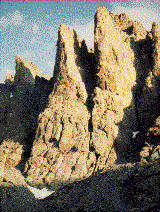

The Petit Grepon
The Petit Grepon is one of Rocky Mountain National Park's most challenging and awesome climbs. Nestled in the middle of the Cathedral Spires, the summit of the Petit Grepon is a mere ten by thirty foot perch, but "placemat" may be a better term. For those who are more interested in a less intimidating climb, we also offer tours up Sharkstooth, a nearby summit offering excellent views of the Petit Grepon.
difficulty level: expert
time: full day
physical stress: extreme